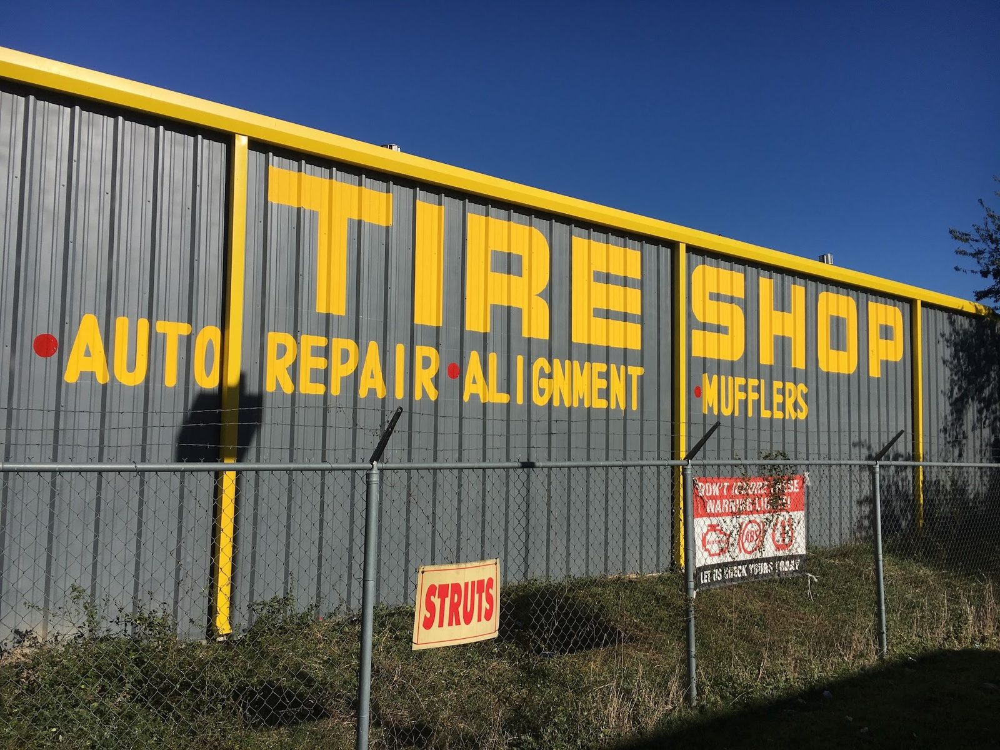

Tires
New tires, mounted and balanced.
- New tires
- Mounting and balancing
Tire shop · Old Seguin Rd, San Antonio
Tire shop, auto repair, alignment and mufflers. Brakes, front end work and truck lifts too.

Dispatch board
Painted right on the wall: tire shop, auto repair, alignment, mufflers.
New tires, mounted and balanced.
Racks of wheels out front and chrome wheels stacked inside.
Muffler replacement.
Brake service.
Front end work.
Lift kits installed, with new tires if you need them.
Reviews
4.2 460 Google reviews
“If you need a spot to get your truck lifted, this is the place. Rick went above expectations to ensure my truck got done appropriately. I bought a Rough Country kit and had it installed along with some new 33s. My truck came out amazing. I definitely recommend this shop.”
“Thank you so much to Rick for being kind and helping me out and also saving money ! Everybody was so nice to me and respectful ! My mom goes to them and thanks to them I was able to get my car fixed ❤️❤️🫶🏽 They even put gas in my car lol That was really nice !”
“Great tire and muffler shop . Reasonable prices. Staff took good care of wheels and muffler replacement looks and sounds better. Thanks for making it easy.”
Who answers the phone
Racks of wheels out front, stacks of tires inside, and a yellow and black sign on the fence that says it plain.
Friendly staff, fair prices and easy to work with. Tires, brakes, front end work, mufflers and lift kits.

Friendly staff and simple service.
Muffler replacements done right.
Kind, respectful help that goes the extra step.
On the job


Hours & directions
4620 Old Seguin Rd, San Antonio, TX 78219
Open Monday to Saturday. Closed Sundays.